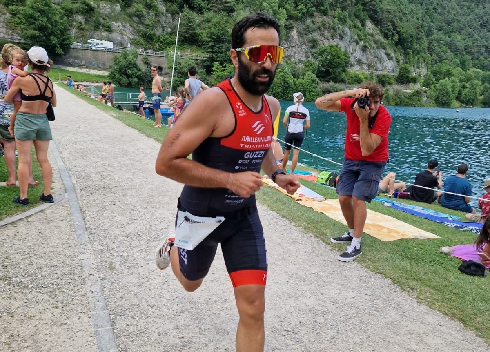
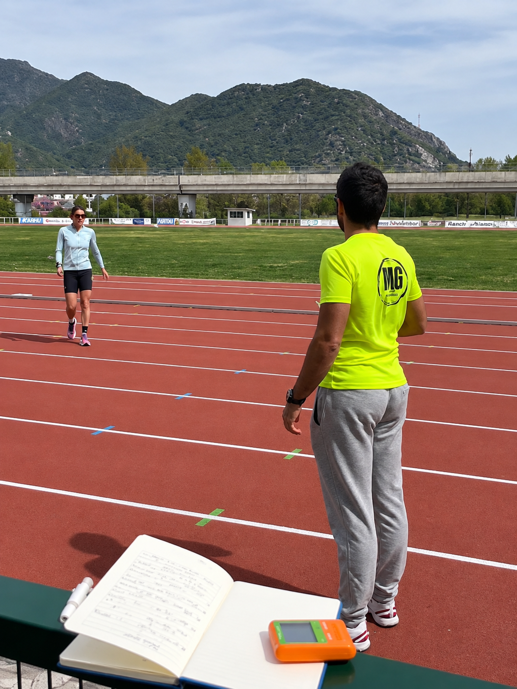
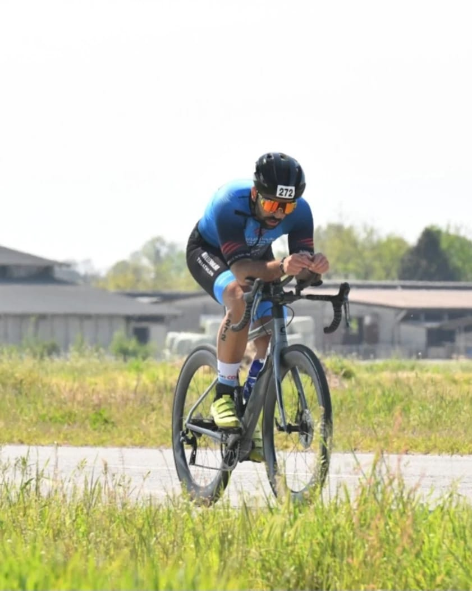
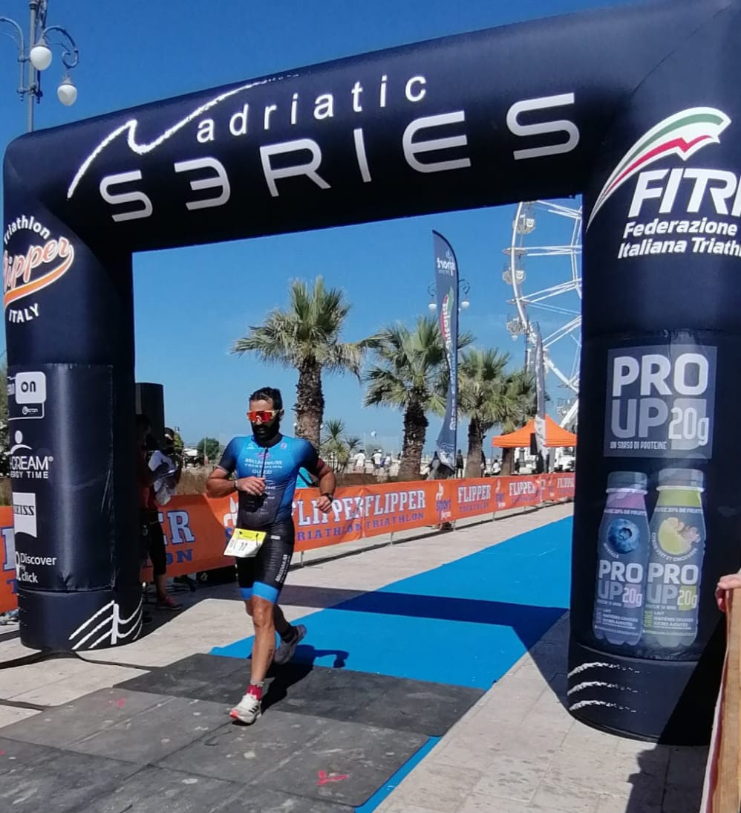
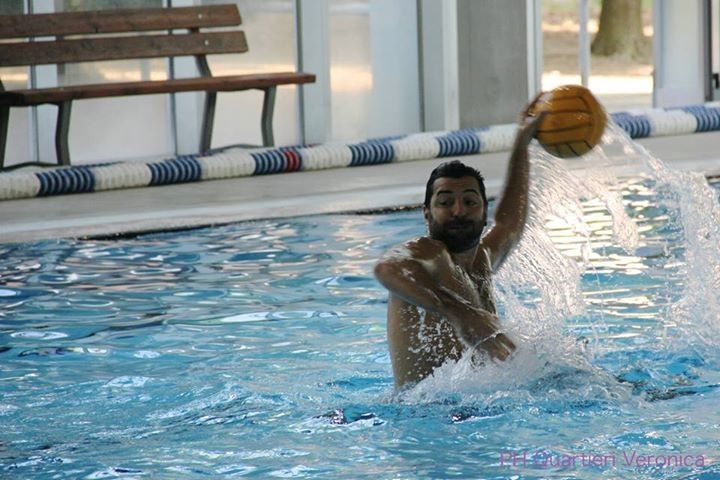

Chi è Michael Guzzi?
Chinesiologo di base (Laurea L-22), Allenatore Federale FITRI & FIN ed ex atleta di alto livello con base a Bergamo.

Michael Guzzi
Chinesiologo L-22 • Tecnico FITRI & FIN • Bergamo
Passione Sportiva e Metodo Scientifico
Sono Michael Guzzi e sono da sempre un amante di tutti gli sport. Fin da piccolo ho praticato nuoto, per poi passare all’età di 9 anni alla pallanuoto, sport che mi ha formato e con il quale sono cresciuto, dedicandomi da giocatore per oltre 20 anni, praticando giovanili di ottimo livello giocando diverse fasi finali nazionali e giocando in diverse categorie senior serie C, serie B, serie A2 nel corso degli anni.
Nel 2015 decido di provare uno sport individuale e mi affaccio al mondo dell’endurance iniziando a praticare triathlon. Allo stesso tempo alleno le squadre giovanili di una società di pallanuoto bergamasca capendo che forse quello sarebbe stato il mio ambito.
Volendo approfondire in maniera professionale, la preparazione sportiva e cullando il sogno di diventare preparatore decide nel 2020 di iscrivermi all’università di Scienze Motorie. Percorso universitario conluso con Laurea Triennale in Scienze Motorie L-22 nel Luglio 2024 (titolo accademico Chinesiologo di base), con tesi intitolata: “VALUTAZIONE E GESTIONE DEL CARICO INTERNO ED ESTERNO DI ALLENAMENTO PER ATLETI D'ELITE DEL TRIATHLON”.
Dopo aver conseguito la laurea inizio a seguire diversi atleti amatoriali nelle varie discipline dell’Endurance (nuoto, corsa, ciclismo, con un focus sul Triathlon). In questo ambito, collaboro con agonisti, offrendo loro supporto tecnico e metodologico. Parallelamente, nascono le prime collaborazione con società sportive del territorio.
"Mi reputo sempre disponibile a supportare gli atleti nel raggiungimento dei loro obiettivi sportivi."
Momenti di Gara e Formazione




